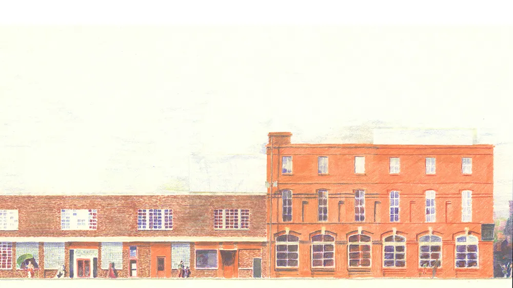
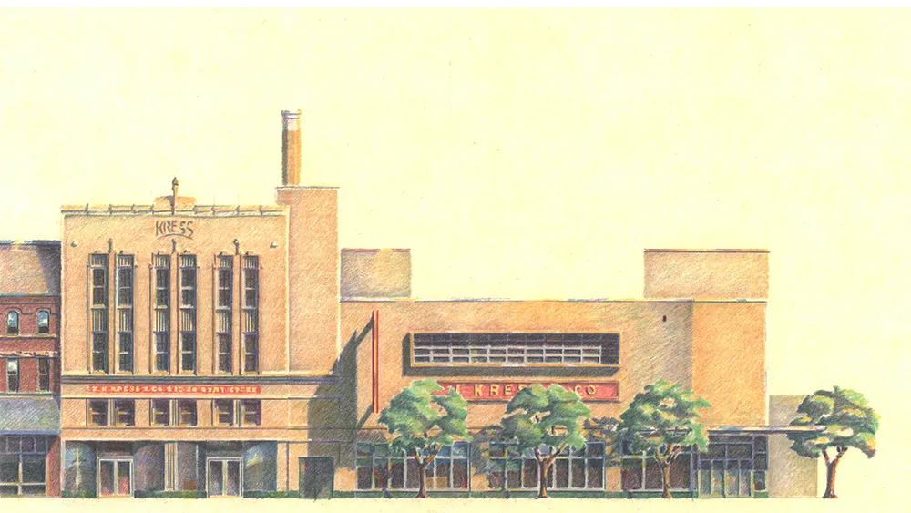
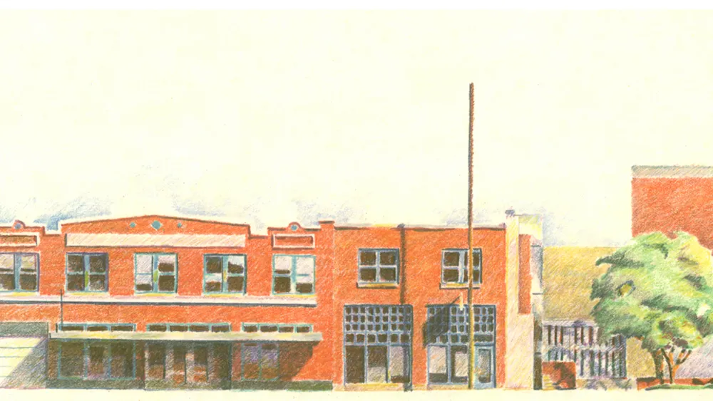
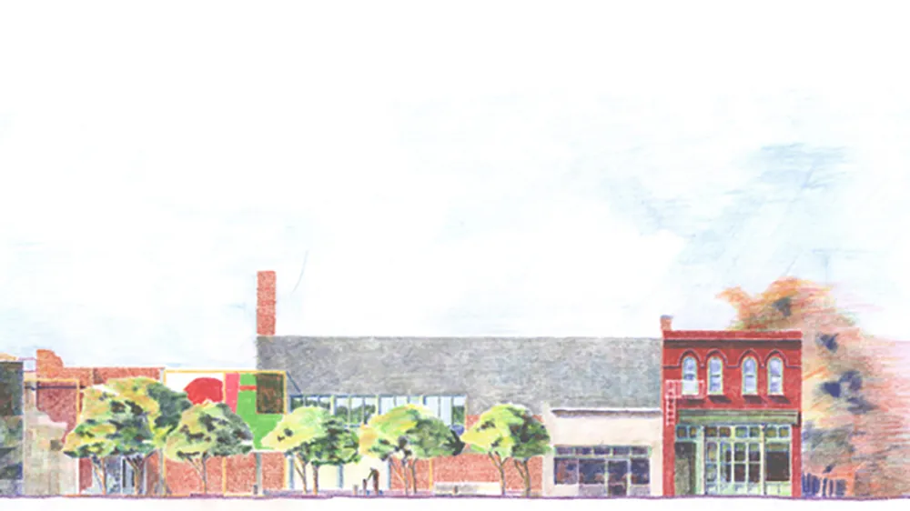
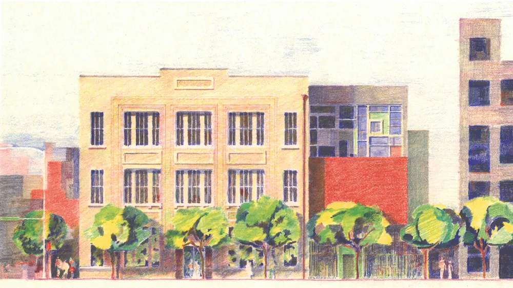
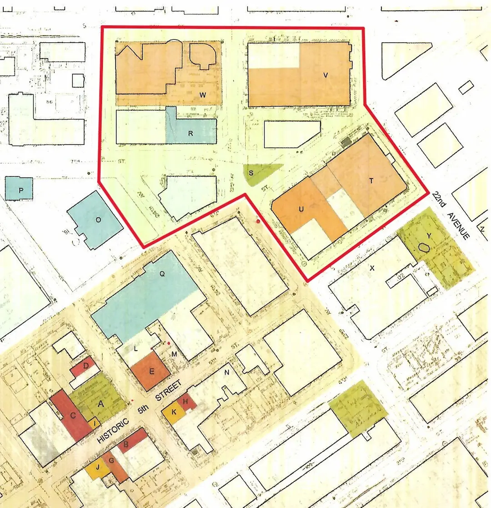

Meridian Downtown Development Study
Meridian, Mississippi
A study commissioned by the Stennis Institute for Government at Mississippi State University researched efforts for revitalizing an area of Meridian’s Downtown, where businesses primarily run by African Americans had historically thrived. The study looked at five buildings, each planned for adaptive reuse, with mixed-use functions such as a children’s museum, a multi-purpose facility, a business incubator, the relocation of the Jimmie Rodgers Museum and artists’ residences. Green space in between the buildings was also carefully considered, creating a space for a park, to be used for a variety of venues. It is the goal of the Institute to seek funding for these projects.
Completed: 2004





